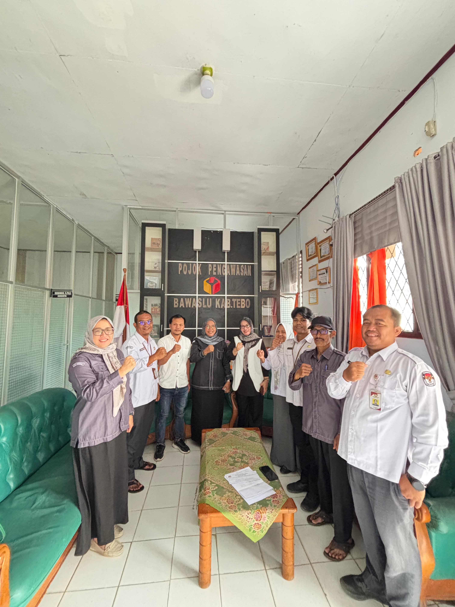

Muara Tebo – Dalam rangka memperkuat sinergi antar lembaga penyelenggara pemilu, Komisi Pemilihan Umum (KPU) Kabupaten Tebo melakukan kunjungan koordinasi ke Badan Pengawas Pemilihan Umum (Bawaslu) Kabupaten Tebo.
Kunjungan ini dilaksanakan sebagai bagian dari upaya membangun komunikasi dan koordinasi yang baik antara KPU dan Bawaslu dalam pelaksanaan tugas kepemiluan, khususnya terkait dengan proses Pemutakhiran Data Pemilih Berkelanjutan (PDPB) Triwulan I Tahun 2026.
Dalam pertemuan tersebut, KPU Kabupaten Tebo juga menyampaikan pemberitahuan mengenai pelaksanaan coklit terbatas (coktas) yang dilakukan terhadap data pemilih tertentu dalam rangka memastikan keakuratan data pemilih. Kegiatan coktas ini merupakan tindak lanjut dari data yang diturunkan oleh KPU RI untuk dilakukan pengecekan langsung di lapangan.
Melalui kegiatan coktas tersebut, KPU Kabupaten Tebo melakukan verifikasi terhadap data pemilih guna memastikan status pemilih masih memenuhi syarat atau tidak memenuhi syarat sebagai pemilih. Langkah ini penting untuk menjaga kualitas dan keakuratan daftar pemilih.
Pertemuan ini juga menjadi momentum untuk memperkuat komitmen bersama antara KPU dan Bawaslu dalam menjaga integritas serta kualitas penyelenggaraan pemilu di Kabupaten Tebo.
Dengan adanya komunikasi dan koordinasi yang baik antara kedua lembaga, diharapkan setiap tahapan kepemiluan dapat berjalan secara transparan, profesional, serta sesuai dengan peraturan perundang-undangan yang berlaku.